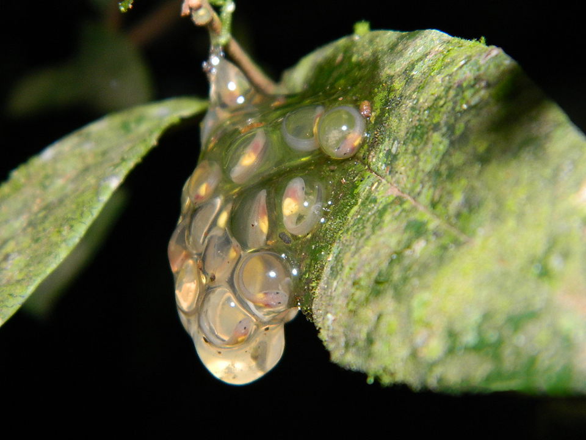
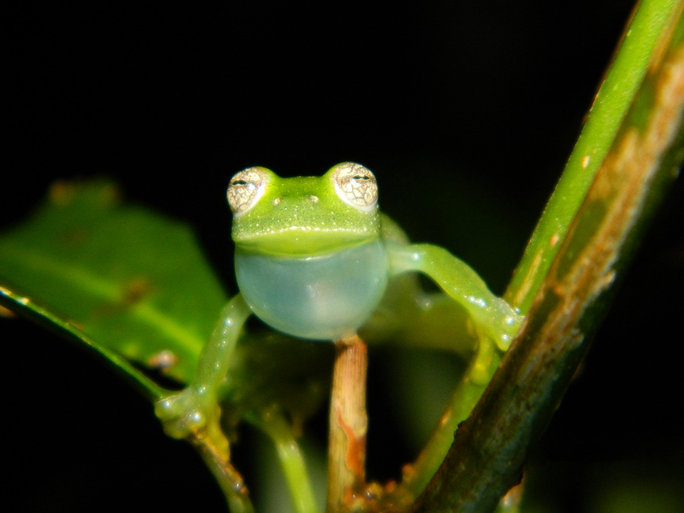
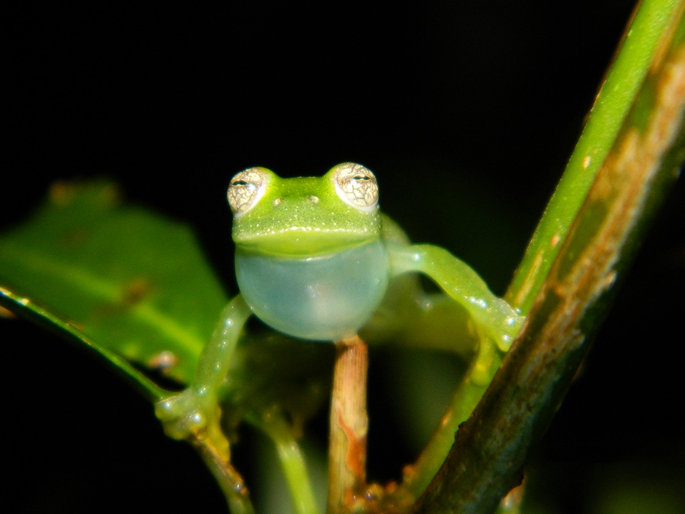

Uma espécie de tamanho pequeno, com cerca de 2 cm. Coloração verde clara, com alguns pontos escuros no dorso. No ventre a pele tem coloração bastante clara e transparente, permitindo a visualização de órgãos internos. Espécie arborícola de áreas florestadas, rara, ocorre no sul e sudeste do Brasil, além da Argentina.
Os machos são encontrados vocalizando na vegetação das margens de riachos de águas claras e fundo rochoso. O nome científico “Vitreorana” é utilizado para esta e outras espécies de pererecas-de-vidro que possuem essa característica de transparência de seu ventre. Os ovos são cercados por uma substância gelatinosa e adesiva e são depositados pelo casal em folhas de árvores e arbustos nas margens dos riachos, das quais os girinos caem após a eclosão.


 
